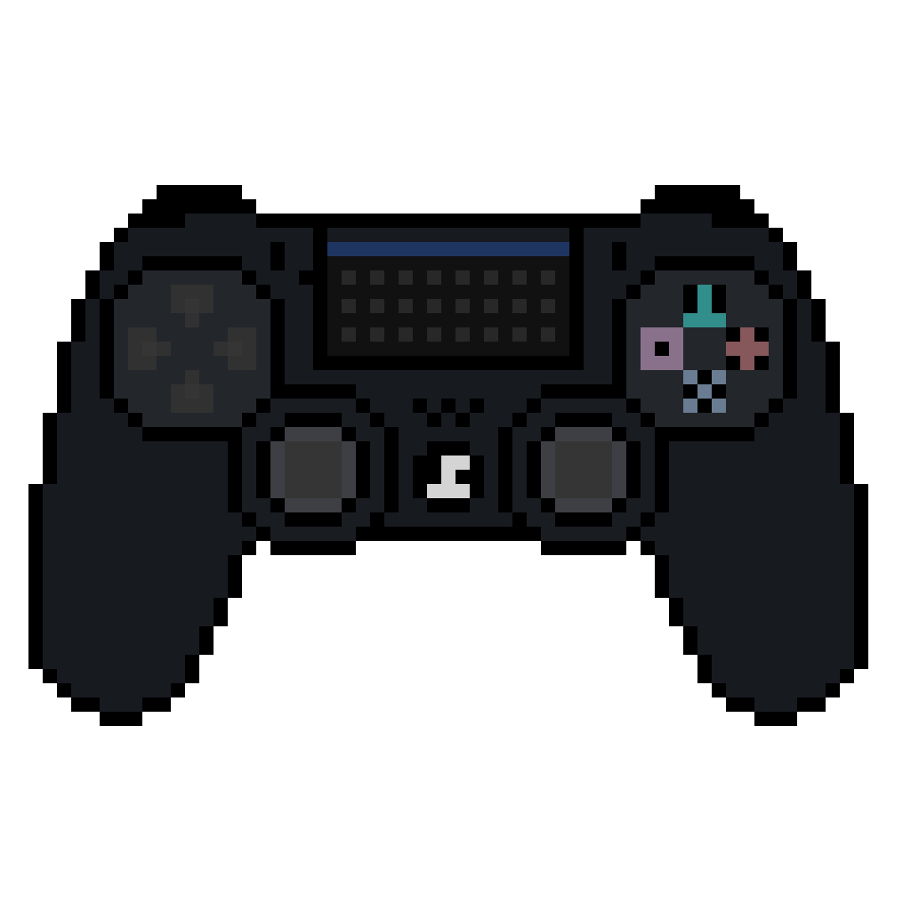

Brayan Zambrano
Mateo Vargas
Samuel Dominguez
Este diseño utiliza la ley de figura y fondo de la Gestalt, resaltando la imagen y los elementos interactivos con efectos de neón sobre un fondo dinámico para captar la atención.